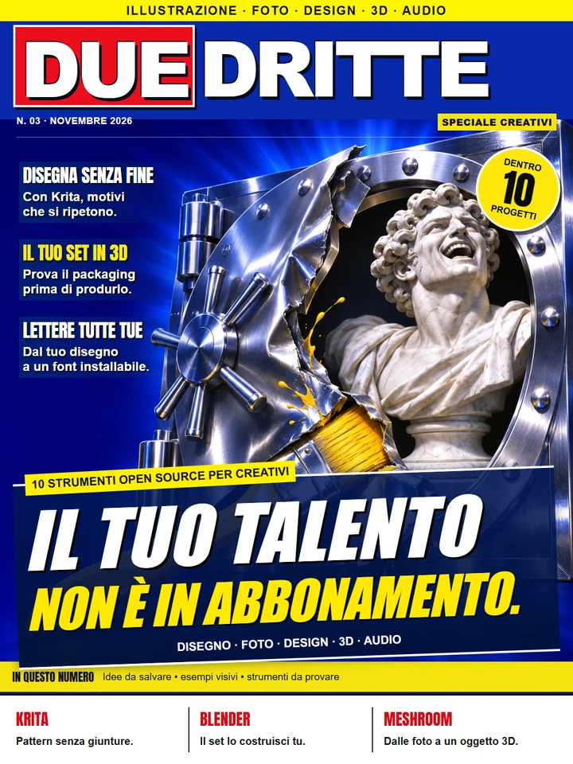
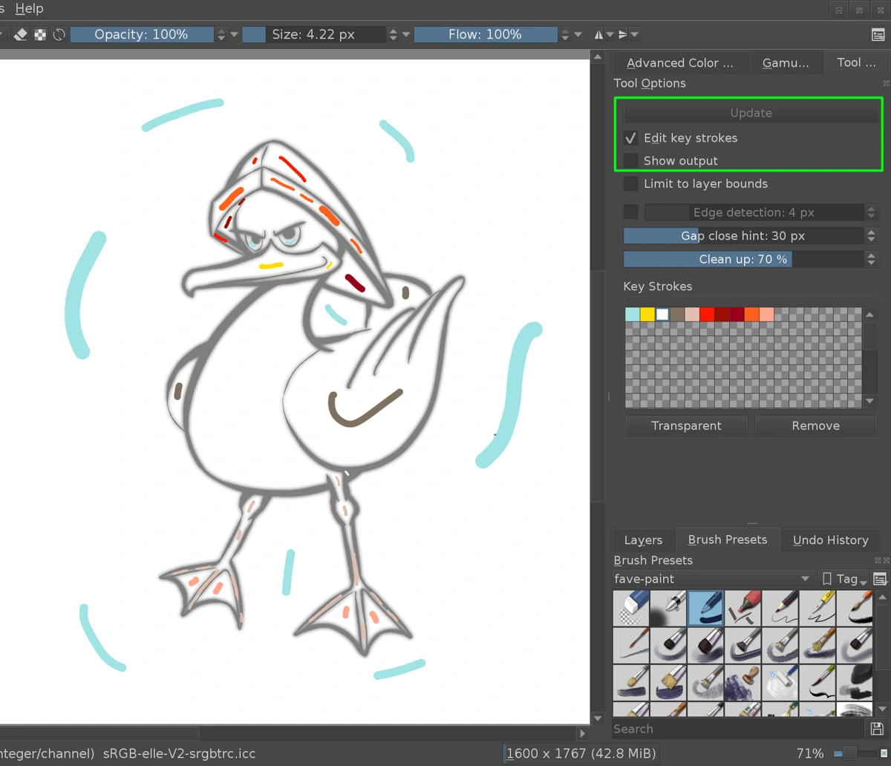
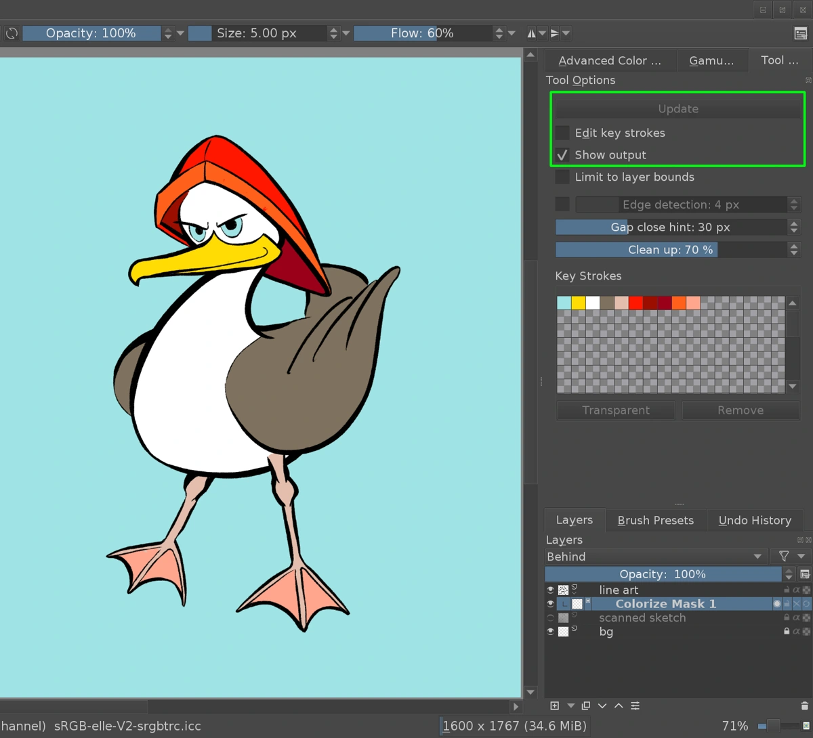
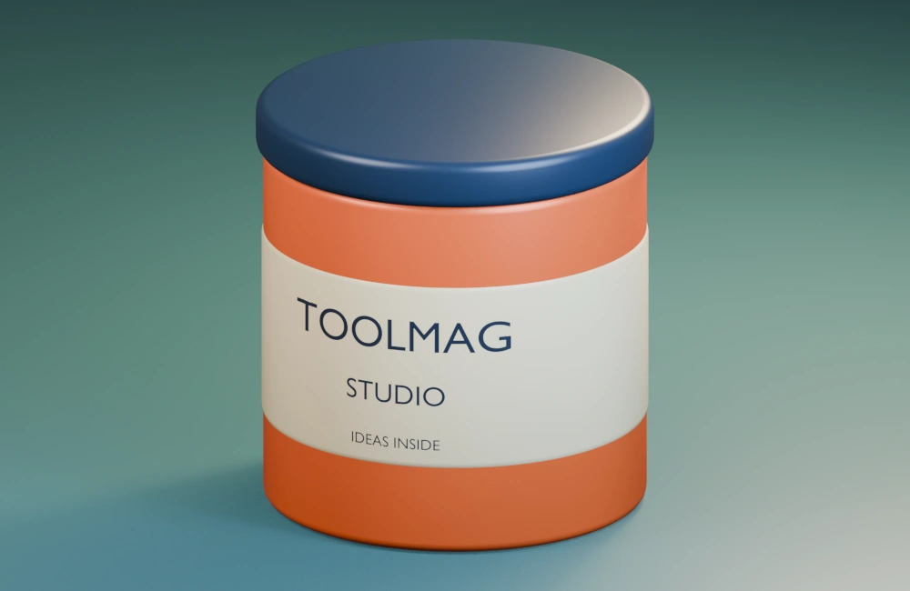
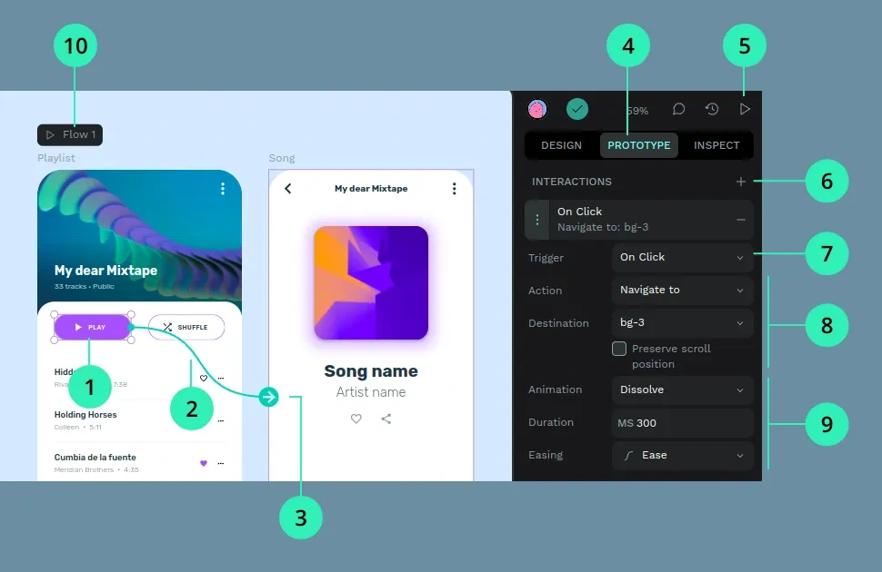

NOVEMBRE 2026
SPECIALE CREATIVI
NUMERO
IL TUO PROSSIMO
«GUARDA COSA HO FATTO».
Colora un disegno. Prova un packaging.
Dai forma alle tue idee, con gli strumenti giusti.
STRUMENTI UTILI.
REAZIONI ESAGERATE.
Disegno, foto, design, 3D e audio.
Dieci strumenti. Due dritte per ciascuno.

COPERTINA N. 03LI VOGLIO
PROVARE TUTTI!!!


Colorize Mask, dal manuale ufficiale.

Il nostro render, realizzato in Blender.

Prototipo da configurare, non un sito operativo.
Immagini autentiche: manuali Krita e Penpot; render TOOLMAG in Blender. Fonti e requisiti nelle schede.
LE COPERTINE FANNO RUMORE.
DENTRO CI SONO LE IDEE.02 numeri · 20 strumenti
NOVEMBRE 2026
Colora un disegno. Prova un packaging.
Dai forma alle tue idee, con gli strumenti giusti.
NOVEMBRE 2026

Modelli sul tuo PC. Documenti da organizzare.
Dieci progetti per scoprire cosa puoi farci.
L’indice con ricerca e filtri è sempre qui.